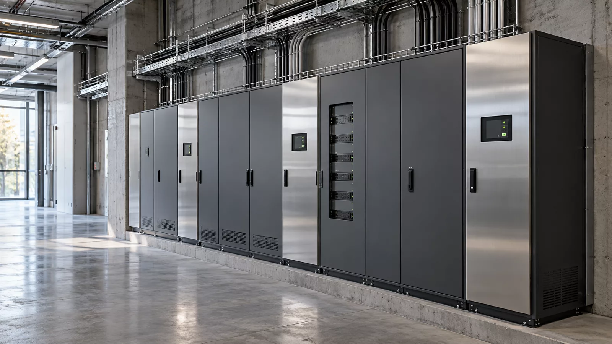

Distribuție și circuite
Trasee de cabluri, tablouri și circuite de alimentare, coordonate cu arhitectura și celelalte instalații.
EXPERTIZĂ INTEGRATĂ
Execuția instalațiilor electrice pentru clădiri rezidențiale, spații de birouri și proiecte industriale, pornind de la documentația și cerințele fiecărui obiectiv.

Distribuție electrică și trasee coordonate
ARII DE INTERVENȚIE
Trasee de cabluri, tablouri și circuite de alimentare, coordonate cu arhitectura și celelalte instalații.
Instalații de iluminat, prize și alimentări dedicate, adaptate destinației spațiului.
Verificări, identificarea circuitelor și documente de predare, în limitele stabilite prin proiect și contract.
O INTERVENȚIE BINE DEFINITĂ
O instalație electrică bine pregătită pornește de la destinația spațiului: ce consumatori vor fi alimentați, unde sunt necesare circuite dedicate și cum se integrează iluminatul în folosirea clădirii. VASTASIA corelează execuția cu documentația tehnică și cu celelalte specialități, astfel încât traseele să fie discutate înainte de închiderea pereților sau a plafoanelor.
În construcții noi și amenajări, ordinea lucrărilor influențează accesul în șantier și continuitatea intervențiilor. Stabilim limitele lucrării, materialele și echipamentele convenite, punctele de verificare și documentele de predare. Pentru intervenții în spații utilizate, discutăm separat accesul, opririle necesare și organizarea etapelor.
Sunt utile localitatea, tipul clădirii, stadiul lucrării, planurile disponibile și termenul urmărit. Dacă nu ai toate informațiile, pornim de la ce este cunoscut și stabilim ce trebuie clarificat.
Destinația clădirii, documentația disponibilă, specialitățile implicate, calendarul, accesul în șantier și limitele exacte ale lucrării.
Lucrările și verificările care cer autorizări specifice sunt stabilite în ofertă și realizate de personalul sau partenerii autorizați corespunzător.
CUM LUCRĂM
Discutăm obiectivul, stadiul actual și documentele disponibile.
Stabilim soluția de lucru, responsabilitățile și oferta pe specialități.
Organizăm echipa și succesiunea lucrărilor în relație cu șantierul.
Parcurgem verificările convenite și documentăm predarea.
ÎNTREBĂRI FRECVENTE
Lucrăm pentru proiecte rezidențiale, spații de birouri și obiective industriale. Analiza inițială stabilește cerințele, stadiul și limitele fiecărei intervenții.
Da. Pornim de la planurile disponibile și identificăm informațiile care trebuie completate. Modificările de soluție și responsabilitatea proiectării se stabilesc înaintea execuției.
Acestea se precizează separat în ofertă. Activitățile pentru care sunt necesare autorizări se realizează cu specialiștii corespunzători domeniului contractat.
VASTASIA CONSULTING GROUP
Spune-ne unde este proiectul, ce tip de clădire ai și în ce etapă te afli. Stabilim împreună următorul pas.